조경산업기사 (2006-09-10 기출문제)
1과목: 조경계획 및 설계
1. K. Lynch가 설명한 조경계획의 개념도 유형이 아닌 것은?
- 토지이용계획
- 동선계획
- 시각적 형태
- 시설물 계획
(정답률: 60%)

2. 중국 청조(淸朝)의 건융(乾隆) 12년(1747년)에 대분천(大噴泉)을 중심으로 한 프랑스식 정원을 꾸밈으로써 동양에서는 최초의 서양식 정원으로 알려진 곳은?
- 원명원 이궁
- 만수산 이궁
- 열하 이궁
- 소주의 명원
(정답률: 86%)
3. 다음 조경공간의 색채 설명 중 틀린 것은?
- 녹음속에 둘러 싸인 빨간 지붕이 더 한층 선명히 보인다.
- 노랑과 검정을 이용하면 강하고 명쾌한 느낌을 준다.
- 고채도의 색은 후퇴 수축해 보인다.
- 공장 주위는 저채도의 녹색계의 조경재료를 이용하면 괴로감을 줄이게 된다.
(정답률: 80%)
4. 다음 조경계획 과정의 설명 중 틀린 것은?
- 계획과정에서 feed back은 보다 훌륭한 계획을 위해 반복한다.
- 계획과정은 토지이용의 예정이나 경관 구성의 시간적, 공간적 골격을 구성하는 단계이다.
- 부지의 조사는 부지 내부와 외부주변 관계도 조사한다.
- 조경계획은 조경가의 의견만을 전적으로 반영시켜야 한다.
(정답률: 55%)
5. 연간 이용자수가 50,000명, 최대일율(最大日率)이 1/50, 회전율이 1/10, 시설의 이용율이 20%, 1인당 시설의 단위 규모가 10m2일 때 시설의 규모는?
- 20m2
- 200m2
- 1,000m2
- 2,000m2
(정답률: 43%)
6. 물체의 보이지 않는 곳의 형상을 나타내는 선은?
- 일점쇄선
- 이점쇄선
- 실선
- 은선
(정답률: 42%)
7. 보양체재(保養滯在)를 위한 자리를 마련하고 일상생활에서 일정거리 이상 떨어진 자연 환경속에 위치되며, 정신적 육체적 스트레스 회복과 건강 회복 증진을 목적으로 이루어지는 것은?
- 리조트 조경
- 자연공원 조경
- 서비스 조경
- 근린공원 조경
(정답률: 65%)
8. Altman은 인간의 영역을 주로 사회적 단위의 측면에서 구분하였는데 다음 중 그 영역에 해당되지 않는 것은?
- 1 차적 영역
- 2 차적 영역
- 3 차적 영역
- 공적 영역
(정답률: 69%)
9. 모가 난 형상과 둥글게 감겨있는 형상 중 둥글게 감겨있는 형상에서 느낄 수 있는 감각은?
- 예민감
- 우아함
- 거치름
- 강인함
(정답률: 87%)
10. 다음 중 놀이벽의 설치시 고려해야 할 사항으로 틀린 것은?
- 어린이의 다양한 놀이형태에 적합한 높이ㆍ두께ㆍ구멍 크기를 유지해야 한다.
- 두께는 20~40cm, 평균높이는 0.6~1.2m로 하여 높이에 변화를 주되, 기어오르고 내리기 쉬운 기울기로 설계한다.
- 놀이벽을 연결하여 미로시설을 설치할 수 없다.
- 놀이벽 주변에는 다른 시설을 배치하지 말고, 주변 바닥은 모래 등 완충재료로 설계한다.
(정답률: 85%)
11. 주거단지 내 가로망 패턴 중 격자형 패턴의 특징은?
- 동선간의 운선순위가 명확하여 접근고의 혼동이 적다.
- 통과 교통이 적어져서 안정성이 확보된다.
- 동선이 길어질 수 있는 단점이 있다.
- 토지이용상 가장 효율적이나 지형의 변화가 심한 곳에서는 급구배가 발생하기 쉽다.
(정답률: 67%)
12. 다음 도면의 도시(圖示)에 해당되는 것은?
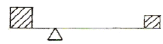
- 대칭 균형
- 비대칭 균형
- 비대칭 불균형
- 대칭 불균형
(정답률: 72%)
13. 근린공원의 기능 설정은 자연 - 인간 - 사회의 연계성에서 출발하게 되는데 이 중 사회적 기능에 포함되지 않는 것은?
- 휴식
- 집회
- 지역의 상징
- 역사의 반영
(정답률: 83%)
14. 실시설계 단계에서 행하여야 할 내용 중 틀린 것은?
- 세부 디자인을 결정하여야 한다.
- 크기, 구조, 표면의 끝맺음 공법 등을 정확히 결정해야 한다.
- 시방서를 작성하여야 한다.
- 시공비의 개략적인 산출을 하여야 한다.
(정답률: 54%)
15. 다음 케빈 린치가 주장한 경관구성 요소 중 패스(path)의 설명으로 틀린 것은?
- 도로와 철도
- 방향성과 연속성
- 기점과 종점
- 운하 및 장벽
(정답률: 69%)
16. 도시공원 및 녹지 등에 관한 법률에서 생활권 공원의 분류에 해당되지 않는 것은?
- 묘지공원
- 소공원
- 어린이공원
- 근린공원
(정답률: 72%)
17. 공중정원으로 유명한 고대의 계획 도시는?
- 기자
- 카훈
- 바빌론
- 테베
(정답률: 85%)
18. 다음 중 근린공원 및 체육공원에 설치하는 골프연습장은 얼마의 공원면적 당 1개소씩 설치할 수 있는가?
- 5만제곱미터
- 10만제곱미터
- 15만제곱미터
- 20만제곱미터
(정답률: 72%)
19. 다음 중 개략 토양도에 관한 설명으로 틀린 것은?
- 개략 토양도는 1:25,000 축척으로 제작된다.
- 개략 토양도는 광범위한 지역에 대한 개발계획에 활용된다.
- 간이 산림토양도는 1:25,000 축척으로 제작된다.
- 간이 삼림 토양도는 토양의 잠재 생산능력급수를 1급부터 5급까지 나누어 표시한다.
(정답률: 39%)
20. 다음 중 초등학교와 결합되어 설계되어 질 수 있는 공원은?
- 근린공원
- 지구공원
- 종합공원
- 유아공원
(정답률: 70%)
2과목: 조경식재
21. 잔디의 전면붙이기로 뗏장을 맞붙일 때, 뗏장 1장의 규격이 45cm×30cm라면, 1,000장으로 조성할 수 있는 뗏장의 평수는?
- 약 40평
- 약 60평
- 약 80평
- 약 100평
(정답률: 40%)
22. 초화류 식재시 자연토양에서 생육 최소 토심으로 가장 적합한 것은?
- 약 20cm 내외
- 약 30cm 내외
- 약 40cm 내외
- 약 60cm 내외
(정답률: 72%)
23. 다음 중 자동차 배기가스에 특히 약한 수종으로만 짝지어진 것은?
- 소나무, 은행나무
- 히말라야시디, 은목서
- 왜금송, 태산목
- 녹나무, 피나무
(정답률: 42%)
24. 흰꽃이 피는 나무로서 일년 중 가장 늦게 피는 나무는?
- Rhododendron schlippenbachii for. albirlorum T.Lee
- Spiraea prunifoiia var. simplicifiora Nak.
- Ligustrum obtusifolium S. et Z
- Gardenia jasminoldes for. grandiflora Mak.
(정답률: 34%)
25. 소나무과 소나무속의 식물 중 한속(束, Bundle)에 5개의 잎이 속생(束生)하는 것이 아닌 것은?
- 잣나무
- 섬짓나무
- 스트로브잣나무
- 리기다소나무
(정답률: 60%)
26. 수고 4.5m 정도의 수목을 식재한 후 설치하는 지주로 가장 적합한 것은?
- 당김줄형
- 삼각형
- 이각형
- 삼발이
(정답률: 39%)
27. 다음 중 오랜 경험을 통해 그 일반적인 경향을 통하여 내음성을 판단하는 방법과 관계가 먼 것은?
- 최저 수광율(relative light minimum)의 조사
- 자연 전지(全紙)의 정도와 고사의 속도
- 수고 생장속도의 차이
- 토양 견밀도에 따른 조사
(정답률: 63%)
28. 다음 수종 중 굴취시 규격표시 방법이 H×R로 표시되는 것은?
- Ailanthus altissima Swingle
- Metasequoia glyptostroboides Hu et Cheng
- Acer palmatum Thunb.
- Betula platyphyila var. japonica Hara
(정답률: 36%)
29. 가로막이 식재의 기능으로 가장 거리가 먼 것은?
- 경계의 표시
- 눈가림
- 진입방지
- 침식방지
(정답률: 70%)
30. 수식 A=24+(N-3)×d는 무엇을 산출하기 위한 공식인가? (단, N:근원직경, d:상수로서 일반적으로 4)
- 식재 구덩이의 크기
- 뿌리분 직경
- 뿌리분의 중량
- 흉고직경 산출식
(정답률: 39%)
31. 생물 서식처(habitat)의 설명으로 가장 적합한 것은?
- 잠재 자연 식생이 발생하는 장소
- 한 군집과 다른 군집의 경계 장소
- 생물이 살고 있는 곳 또는 생물이 발견되는 장소
- 군집에서 생물의 기능적 역할(영양적 위치)을 수행하는 장소
(정답률: 65%)
32. 다음 그림의 기호에 대한 용어와 단위가 틀린 것은?
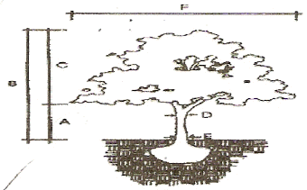
- A : 수고 (H, m)
- D : 흉고직경(B, cm)
- E : 근원경 (R, cm)
- F : 수관폭(W, m)
(정답률: 63%)
33. 홍만선의 산림경제에 기술된 각종 나무와 꽃의 재배법에 나타난 식재원칙이 아닌 것은?
- 가목 가까이는 심근성 수종이나 큰 나무를 식재하지 않고 작은 꽃을 가꾼다.
- 서북쪽에는 큰 나무를 심고 동남쪽에는 큰 나무를 심지 않는다.
- 마당 한가운데를 피하고 마당가의 담장쪽에 심는다.
- 다층구조식재로 작은 숲을 형성한다.
(정답률: 39%)
34. 주거지역과 공업지역 사이의 공해방지를 위한 완충녹지, 계획부지 주변의 소음방지식재, 공중에 떠 있는 분진의 흡착제거를 위한 식재는?
- 풍치림식재
- 환경보전식재
- 동선조절식재
- 차폐식재
(정답률: 50%)
35. 다음 장미류의 학명 중 찔레나무 학명은?
- Rosa rugosa
- Rosa hybrida
- Rosa xanthina
- Rosa multiflora
(정답률: 43%)
36. 우리나라 골프장 퍼팅그린(putting green)에 활용할 수 있는 잔디 종류는?
- Bent grass
- Fescue
- Kentucky Blue grass
- Zoysia Japonica
(정답률: 65%)
37. 조경식물의 명명법 설명으로 옳은 것은?
- 속명은 항상 소문자로 시작한다.
- 학명은 우리나라에서만 사용된다.
- 속명과 종명은 이탤릭체로 표기한다.
- 보통명과 구분되지 않는다.
(정답률: 72%)
38. 다음 중 학명의 종명이 원산지를 한국으로 표현하고 있지 않는 것은?
- 잣나무
- 노각나무
- 후피향나무
- 개나리
(정답률: 29%)
39. 수목의 뿌리 분포를 가정(假定)하는 가장 적당한 기준은?
- 수관(樹冠)의 확장 정도(擴張 程度)
- 수고(樹高)
- 분지수(分枝數)
- 수간(樹幹)의 굵기
(정답률: 65%)
40. 다음 중 차폐식재에 해당되는 항목으로 가장 적합한 것은?
- 정형식재
- 유도식재
- 기능식재
- 자연풍경식재
(정답률: 72%)
3과목: 조경시공
41. 다음 토양수분의 보수성에 대한 설명 중 표면장력에 의해 수분이 이동하며, 식물에 가장 잘 이용되는 수분은?
- 중력수
- 모관수
- 수화수
- 흡습수
(정답률: 67%)
42. 다음 네트워크 공정표와 관련된 내용 중 틀린 것은?
- 작업을 나타내며 시간과 자원을 필요로 하는 부분을 Activity(작업, 활동)라고 한다.
- 작업의 종료, 개시 또는 작업과 작업간의 연결점을 Event(결합점)라 한다.
- 작업의 상호관계만을 나타내는 실선 화살선으로 작업이나 시간의 요소를 Dummy(더미)라 한다.
- 최초작업의 개시에서 최종작업의 완료에 이르는 경로 중 소요일수가 가장 긴 경로를 Critical Path(주공정선)이라고 한다.
(정답률: 67%)
43. 식재용 객토를 리어카로 운반하려 한다. 운반거리는 150m이며 6%의 경사로이다. 계산상의 운반거리는? (단, 6% 경사시 환산계수(a)는 1.43이다.)
- 151.43m
- 157.43m
- 156m
- 214.5m
(정답률: 65%)
44. Kutter공식 또는 Manning 공식을 활용하여 구할 수 있는 것은?
- 평균유속(平均流速)
- 도수관경(道水管經)
- 도수관장(道水管長)
- 평균유량(平均流量)
(정답률: 63%)
45. 등고선의 성질에 관한 설명 중 틀린 것은?
- 경사가 급한 곳보다 경사가 완만한 곳이 간격이 넓다.
- 등경사지의 등고선 간격은 등간격이다.
- 높이가 다른 등고선은 절대로 교차되거나 합쳐지지 않는다.
- 최대 경사의 방향은 등고선에 수직한 방향이다.
(정답률: 57%)
46. 인공폭포나 인공동굴의 재료로 많이 쓰이는 것은?
- FRP(Fiber reinforced plastic)
- Red wood
- STS(Stainless steel)
- PE(Polyethylene)
(정답률: 65%)
47. 다음 그림과 같은 단면의 줄기초가 100m이다. 터파기한 후의 흙량은? (단, 토량변화율 L=1.3, C=0.9 이다.)
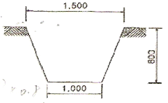
- 77m3
- 90m3
- 130m3
- 520m3
(정답률: 50%)
48. 기업의 유지를 위한 관리활동부문에서 발생하는 제비용으로서 제조원가에 속하지 아니하는 모든 영업비용 중 판매비 등을 제외한 비용으로 기업손익계산서를 기준으로 산정하는 것은?
- 재료비
- 이윤
- 경비
- 일반관리비
(정답률: 67%)
49. 재료가 많이 소요되며, 4m 정도까지로 비교적 낮은 옹벽에 많이 쓰이는 가장 단순한 옹벽은?
- 캔틸레버 옹벽
- 부축벽 옹벽
- 중력식 옹벽
- 역T형 옹벽
(정답률: 65%)
50. 다음 중 우수유출량의 산정식(Q=
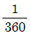
ㆍCㆍIㆍA)에서 I는 강우강도, A는 배수면적 일 때 C가 의미하는 것은?- 유달시간
- 강우속도
- 강우량
- 유출계수
(정답률: 74%)
51. 감독자가 공사의 일시중지를 지시할 수 있는 경우가 아닌 것은?
- 준공까지 공사기한에 여유가 있을 경우
- 시공자가 설계서 대로 시공하지 않을 경우
- 공사 종사원의 안전에 영향을 미치게 될 경우
- 시공자의 시공방법이 미숙하여 조잡한 공사가 우려될 경우
(정답률: 77%)
52. 단순보에 등분포하중이 작용할 때 보에 대한 설명 중 틀린 것은?
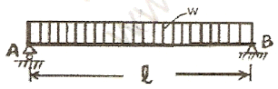
- A점의 반력은
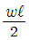
이다. - 최대 전단력은 보의 중앙
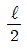
지점에서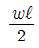
이다. - 최대굽휨모멘트는 보의 중앙
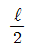
지점에서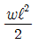
이다. - 단순보를 철근콘크리트로 만든다고 할 때 보단면 하단에 설치하는 것이 적합하다.
(정답률: 46%)
53. 도막이 견고하고, 내후성과 내수성이 좋고, 착색이 선명하고, 성분은 안료+바니쉬이며, 옥내외 목재와 금속면에 사용이 가능한 도료는?
- 수성페인트
- 에나멜페인트
- 유성페인트
- 에멀션페인트
(정답률: 62%)
54. 시멘트 쌓는 단수를 10포대로 할 때, 200m2의 창고에 저장할 수 있는 시멘트양은?
- 2,000포
- 2,500포
- 5,000포
- 7,500포
(정답률: 36%)
55. 토사의 절취 후 운반 작업거리가 60m 이하일 때 가장 합리적으로 사용할 수 잇는 건설기계 장비는?
- 불도저
- 백호우
- 로우더
- 그레이더
(정답률: 60%)
56. 배수 지역이 방대해서 하수를 한 곳으로 모으기 곤란할 경우에 이용하는 배수 계통은?
- 직각식(直角式)
- 차집식(遮集式)
- 선형식(扇形式)
- 방사식(放射式)
(정답률: 69%)
57. 1:3:6 콘크리트의 타설에는 시멘트 220kg, 모래 0.47m3, 자갈 0.94m3의 재료가 소요된다. 시멘트 1포대의 가격이 2,400원이라면 소요되는 시멘트 가격은? (단, 시멘트 1포의 무게는 40kg으로 한다.)
- 10,560원
- 13,200원
- 264,000원
- 528,000원
(정답률: 57%)
58. 다음 중 철근콘크리트의 부착강도가 큰 경우가 아닌 것은?
- 피복두께가 클수록 부착강도는 크다.
- 인장철근이 압축철근보다 부착강도가 크다.
- 철근의 주장이 클수록 부착강도는 크다.
- 녹슨 이형철근이 원형철근보다 부착강도가 크다.
(정답률: 27%)
59. 다음 중 콘크리트의 시공연도에 가장 적게 영향을 미치는 요인은?
- 시멘트의 양
- 시멘트의 종류
- 단위수량
- 물시벤트비
(정답률: 93%)
60. 다음 중 평판측량에 사용되지 않는 것은?
- 함자
- 엘리데이드
- 다림추
- 구심기
(정답률: 60%)
4과목: 조경관리
61. 다음 곤충의 변태과정 중 완전변태에 관한 내용으로 맞는 것은?
- 알→애벌레→번데기→성충
- 후기발생의 형식에서 전변태, 점변태, 신변태 등으로 구별한다.
- 알→애벌레→성충
- 땅강아지목, 바퀴목, 잠자리목, 매미목 등에서 볼 수 있다.
(정답률: 71%)
62. 일반적으로 레크리에이션 수용능력에는 3 가지 기본적인 구성 요소가 있는데, 이것에 해당되지 않는 것은?
- 관리목표
- 이용자 태도 및 선호도
- 주민참여
- 물리적 자원에의 영향
(정답률: 50%)
63. 다음 중 병원체의 주요 전반(傳搬)방법이 틀린 것은?
- 밤나무줄기마름병균 : 바람
- 대추나무빗자루병균 : 토양
- 잣나무털녹병균 : 묘목
- 묘목의 입고병균 : 물, 토양
(정답률: 47%)
64. 그 해에 자란 가지에서 꽃눈이 분화하여 그 해에 개화하는 수종들로 옳은 것은?
- 배롱나무, 무궁화
- 치자, 동백
- 매화, 수국
- 철쭉, 목련
(정답률: 54%)
65. 딱정벌레목으로 가을이 되면 성충은 무리를 이루어 특정한 장소로 이동해 겨울을 지내며, 유ㆍ성충시에 진딧물이나 깍지 벌레를 잡아먹는 익충은?
- 풀잠자리
- 무당벌레
- 딱정벌레
- 맵시벌류
(정답률: 69%)
66. 겨울철 수간이 동결하는 과정에서 발생하는 상열(frost crack)현상에 대한 설명으로 맞는 것은?
- 수목의 횡축(수평)방향으로 갈라진다.
- 주로 그 해에 자란 어린가지에서 발생된다.
- 수목의 남서쪽 방향이 더 심하다.
- 활엽수보다는 침엽수에서 더 자주 관찰된다.
(정답률: 42%)
67. 뿌리돌림에 관한 설명 중 틀린 것은?
- 안전한 활착을 위하여 대형목이나 귀중한 나무 등에 적용된다.
- 뿌리돌림을 하는 분은 이식할 당시의 뿌리분 보다 약간 작게 한다.
- 1년 중 적합한 시기는 6~8월에 수분이 충분한 시기가 적기이다.
- 대형목인 경우 반드시 지주목을 설치한다.
(정답률: 35%)
68. 종자, 비료 그리고 흙을 혼합하여 네트(Net)에 넣고, 비탈면의 수평으로 판 골속에 넣어 붙이는 공법은?
- 식생구멍공
- 식생판공
- 식성자루공
- 식생매트(mat)공
(정답률: 67%)
69. 다음 중 응애류(mite)에 관한 설명 중 틀린 것은?
- 잎의 즙액을 빨아 먹는다.
- 침엽수에도 피해를 준다.
- 천적으로 바구미, 사슴벌레 등이 있다.
- 피해를 받으면 잎이 황갈색으로 변하며, 수세가 약해 진다.
(정답률: 75%)
70. 콘크리트면에 균열이 생겼을 때 보수하기 위한 재료로 거리가 먼 것은?
- 시멘트 페이스트
- 퍼티
- 코킹제
- 오일 프라이머
(정답률: 77%)
71. 다음 중 한치형 잔디류가 아닌 것은?
- 블루그래스류
- 벤트그래스류
- 훼스큐류
- 버뮤다그래스류
(정답률: 60%)
72. 다음 안전사고 중 설계 또는 설치상 하자에 해당되는 것은?
- 벤치에 못이 삐져나와 이용자의 몸에 상처가 났다.
- 계단 모서리가 마모되어 통행자가 미끄러져 다쳤다.
- 흔들거리던 안내판이 쓰러져 통행인의 이마가 찢어졌다.
- 조합놀이대 위의 나간 간격이 넓어 그 사이로 어린이가 떨어졌다.
(정답률: 48%)
73. 흉고직경 15cm의 벗나무 500주와 23cm의 은행나무 400주를 인력으로 관수하고자 한다. 다음 표의 조건을 참조할 때 4명의 보통인부가 관수를 끝내기 위한 소요일수는?
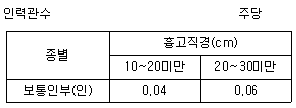
- 5일
- 11일
- 22일
- 44일
(정답률: 50%)
74. 법면 피복용 식물재료가 갖추어야 할 조건 중 틀린 것은?
- 척박지에도 잘 견디는 것
- 뿌리가 흙입자를 잘 얽어 매는 것
- 그 지역 환경인자에 잘 어울리는 것
- 입수하기 어려워도 가격이 비싼 외국수종일 것
(정답률: 80%)
75. 다음 중 잔디깎기에 관한 주의사항으로 틀린 것은?
- 키가 큰 상태의 잔디는 처음에는 낮게 깎아 맹아력을 높이고, 서서히 깎는 높이를 높인다.
- 아침에 이슬로 잔디 토양에 습기가 많을 때는 잔디깎기를 하지 않는다.
- 잔디를 깎는 빈도와 깎는 높이는 규칙적이어야 한다.
- 잔디를 깎아낸 부스러기는 제거하도록 한다.
(정답률: 60%)
76. 보도블록포장 보수시 노반층 위에 부설하는 모래의 일반적인 두께는?
- 1~2cm
- 3~4cm
- 5~6cm
- 7~8cm
(정답률: 47%)
77. 비탈면의 시생회복을 도도하는 경우, 식생공법만으로는 식물의 도입이 곤란한 곳에서 식물의 생육에 적당한 생육 기반을 정리하고 개선하기 위하여 설치하는 공작물 중 토층의 안전을 위한 공법에 해당되지 않는 것은?
- 배수공법
- 구절공법
- 비탈철사망덮기
- 비탈격자블록붙이기
(정답률: 39%)
78. 사방에서 감상할 수 있도록 정원의 중심부에 마련되는 화단으로 가장 적합한 것은?
- 기식화단
- 노단화단
- 화문화단
- 경재화단
(정답률: 43%)
79. 다음 전정을 할 때 우선적으로 잘라 버려서는 안 되는 나무 가지는?
- 역지(逆枝)
- 대생지(對生枝)
- 차지(車枝)
- 측지(側枝)
(정답률: 48%)
80. 다음 전정과 관련한 내용 중 틀린 것은?
- 상록침엽수의 전정은 일반적으로 동절기를 피하여 10~11월에 시행한다.
- 낙엽활엽수의 전정은 발아한 잎이 굳어지는 시기 및 꽃이 피기 시작하는 이듬해 3~6월에 시행한다.
- 상록활엽수의 전정은 생장 정지시기인 5~6월, 9~10월에 시행한다.
- 수국, 매실, 복숭아, 개나리 등 봄에 개화하며 신장한 가지에 5월 중순 ~ 9월경 화아가 분화하는 종류의 전정은 낙과직후에 시행한다.
(정답률: 32%)